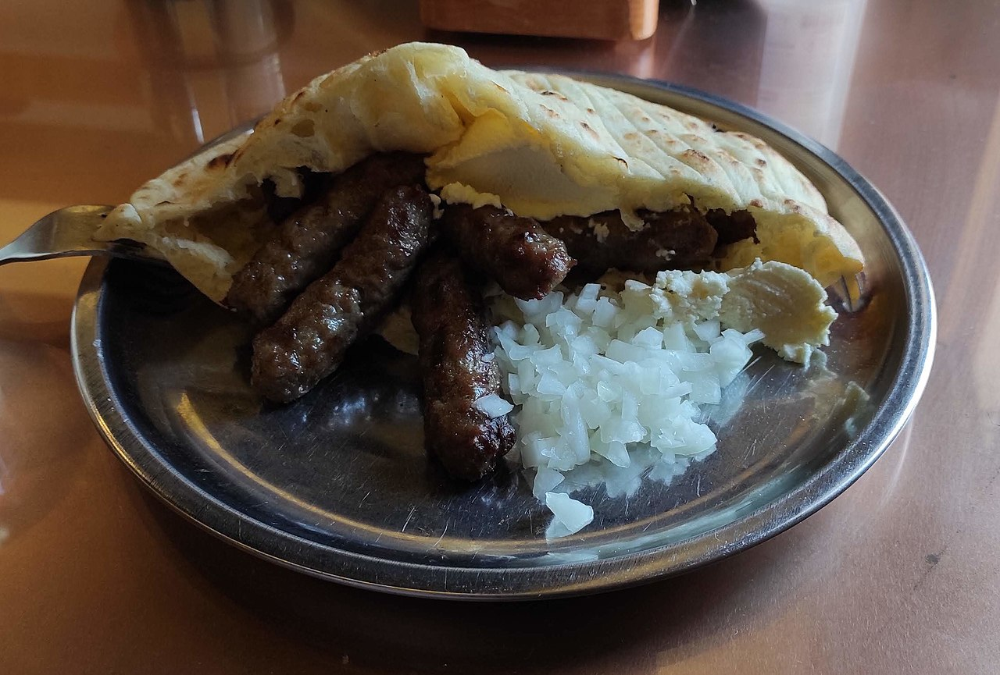

Cevapi

Food has the power to bring us together. It's probably why our culture is so focused on the grill. Channelling
this, Cevapi teach us one thing:Nothing beats a good old-fashioned BBQ.
Ingredients
- 1 (4 pound) beef brisket
- 1 (4 pound) boneless beef chuck roast
- 2 pounds beef short ribs
- 1/2 cup iodized salt
- 4 teaspoons garlic powder
- 2 1/2 taspoons finely ground black pepper
Preparation
- Cut the three different beef types into 1-inch pieces and place into a large bowl. Add salt, garlic powder,
and pepper and mix until well combined. Cover and refrigerate for 24 hours.
- Insert a medium-coarse grinder plate in your meat grinder. Pass meat mixture 2 times through the meat
grinder.
- Shape meat mixture into sausages the size and shape of a fat finger, roughly 3 inches long and 3/4 inch in
diameter.
- Preheat an outdoor charcoal grill for medium-high heat and lightly oil the grate.
- Grill cevapi until cooked through, 4 to 5 minutes per side. An instant-read thermometer inserted into the
center should read 160 degrees F (70 degrees C).
Back To HomePage